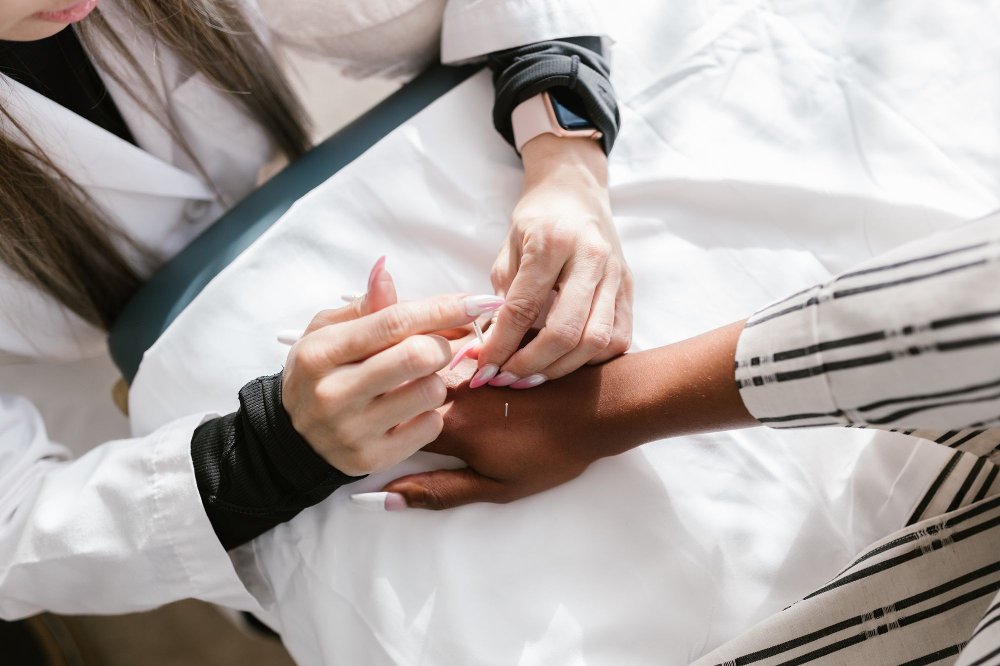

몸을 정밀하게 보기
검사와 소견을 존중하며, 임상병리학에 대한 관심으로 진단을 소중하게 생각합니다.

통증, 회복, 그리고 일상 속 균형이 흔들릴 때 저를 찾아오십니다. 저는 증상을 빠르게 없애겠다고 약속하기보다, 몸이 전하는 신호를 차분히 듣고 그에 맞는 침구 돌봄을 이어 갑니다.
제 진료에는 두 가지 축이 있습니다.
검사와 소견을 존중하며, 임상병리학에 대한 관심으로 진단을 소중하게 생각합니다.
긴장과 불안, 삶의 습관이 몸에 남는 방식을 심리학의 시선으로 함께 살피고, 보수신학이 가르쳐 준 인간 이해로 고통과 회복을 기술만의 문제로 두지 않습니다.
관심 분야는 따로 떨어진 취미가 아니라, 임상을 깊게 하려는 공부입니다.
몸의 변화를 더 정확히 읽고, 침구의 방향을 신중히 잡기 위해
마음이 몸에 남기는 흔적을 함께 헤아리기 위해
아픈 분을 인격과 의미의 자리에서 대하기 위해
기록을 정리하고 패턴을 점검하는 도구로만 쓰기 위해 (진료를 대신하지 않습니다)
15년
임상은 자랑이 아니라, 오래 곁에 있어 왔다는 약속에 가깝습니다. 같은 자리에서 꾸준히 듣고, 손길을 이어 온 시간이 저를 만들었습니다.